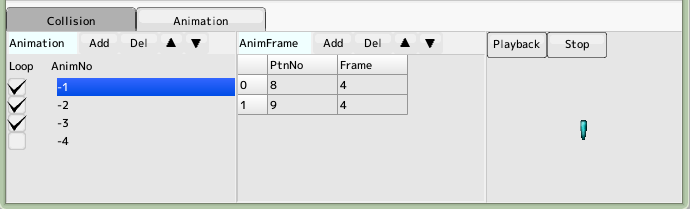
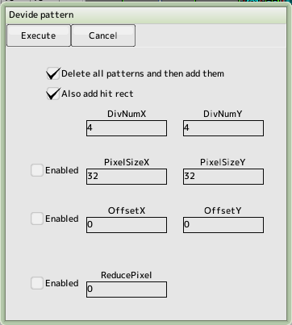

back to the original page
back to the original page
- Register an image file and create a pattern list. You can also register a hit and animation.
Note that the pattern number starts from 1
- Pattern number 0 is a non-display pattern
- Up to 8 image files can be stored in one sprite, and the bank switch button allows you to switch between 0 and 7
- Color Key
Describes a color, in ARGB 32-bit form, that converts a particular color of an image without an alpha channel to a transparent color.
The "..." button opens a dialog to enter ARGB values
Press "▲" button to enter eyedropper mode and get the color from the image.
Transparency is handled differently in the alpha channel than it is in the case of a color key conversion to transparent color.
Image file
- The types of files that can be used as image files are the common The Alpha channel is also available in the following formats
Index colors (palettes) are not supported for BMP and PNG files, and all DDS files are unsupported
- Select an image file from the "..." list in the image file section, or click on the "X" button to unregister it
in the image file section, or use the "X" button to unregister the image file
- Move the mouse in the preview by dragging right to move the image, and zoom in and out with the wheel. Wheel click to reset
Pattern List
Crop from an image at a specific position and size for display as a sprite
It will appear in the preview as a green box
- Bank
Bank number of the registered image
- X position, Y position,
Start position for cutting the pattern from the image (pixel position with 0,0 at the top left of the image)
- Width, height
Size of the pattern cut out of the image (in pixels)
- X center, Y center
Center of the cut-out pattern. This is the center position for rotation and expansion. Also, it is the reference position for judging a hit.
- The behavior of multiple selections
If you enter a numerical value with the pattern selected, the entire selected range is rewritten at the same time
Also, if you enter a numerical value while the pattern is selected, all of the selected patterns will be rewritten (numerical input only)
- Copy & Paste
CTRL+C to copy the selection to the clipboard, CTRL+V to paste it from the clipboard to the cursor position
Some compatibility with cell editing software such as Excel
- Mouse editing
Rectangle size and position on the image can be manipulated with the mouse
SHIFT+ for attack, CTRL+ for defence
Attack Decision List
Registers the hit judgment for the attack
It will appear in the preview as a red frame
- X position, Y position
Relative position from the center of the pattern
- Width and height
Scale for judging a hit
Defense Decision List
Registers the hit decision for defensive purposes.
It will appear in the preview as a light blue frame
- X position, Y position
Relative position from the center of the pattern
- Width and height
Scale for judging a hit
- "Subdivision of hit decisions"
Divide the sprite into sections so that when you rotate the sprite, the hit decision follows the rotation
Unchecking the "subdivision" checkbox will lighten the load for sprites with a large number of hits
Animation

Switching between multiple patterns while displaying the specified frame is called animation
- You can run the animation by specifying this number, starting with animation number
-1, instead of the pattern number
- Loop control
Whether the animation will loop back to the head when it reaches the end
- Frame
Specifies the pattern number and number of frames to be displayed in the animation.
- Preview Playback
Display the animation
Pattern number and animation number
- The pattern number is the number of information from the image that is registered in the pattern list Index number. A serial number is assigned to the leftmost part of the pattern list table, and it is the pattern number (from 1 (Beginning with the beginning and swinging in the positive direction)
- Animation number is the number displayed in the animation list (negative direction from -1)
Where do you want the animation numbers to go?
Essentially, there is a place in the script (in your character or script) where you need to specify a pattern number. So instead of a pattern number, specify an animation number.
Special pattern number "0 (zero)"
If the pattern number is a positive number, the pattern number will be the pattern number and if it is a negative number, it will be the animation. If you set it to 0, the effect is the same as turning off the display. You can also specify the animation. You can also specify a blinking animation in the animation.

Automatic division
If you find it tedious to register image file patterns that have certain rules one by one, you can use automatic division to make it easier for you
E.g., images for fonts
- Delete the entire pattern and then add it
If checked, it deletes all registered patterns and adds a new pattern from a clean slate
- Number of divisions
In the case of the diagram on the right, divide into 4x4
- Pixel size
Specifies the size of one part in pixels (if unchecked, it will be divided equally)
- Offset
Start pixel position from the top left (or from the top left corner if unchecked)
- Reduce the number of pixels
Minimize the size of the split by the specified number of pixels on the top, bottom, left and right sides
Back to the top of the page